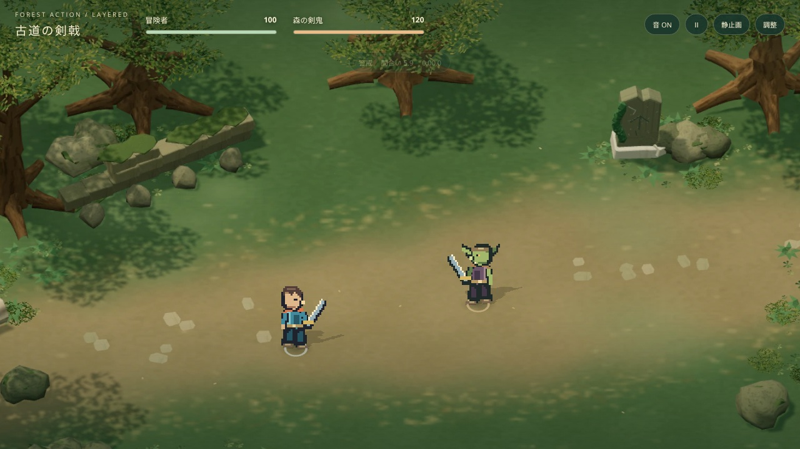
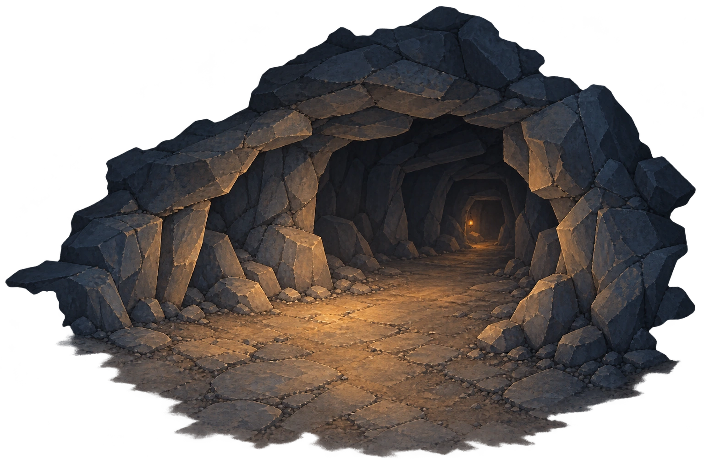
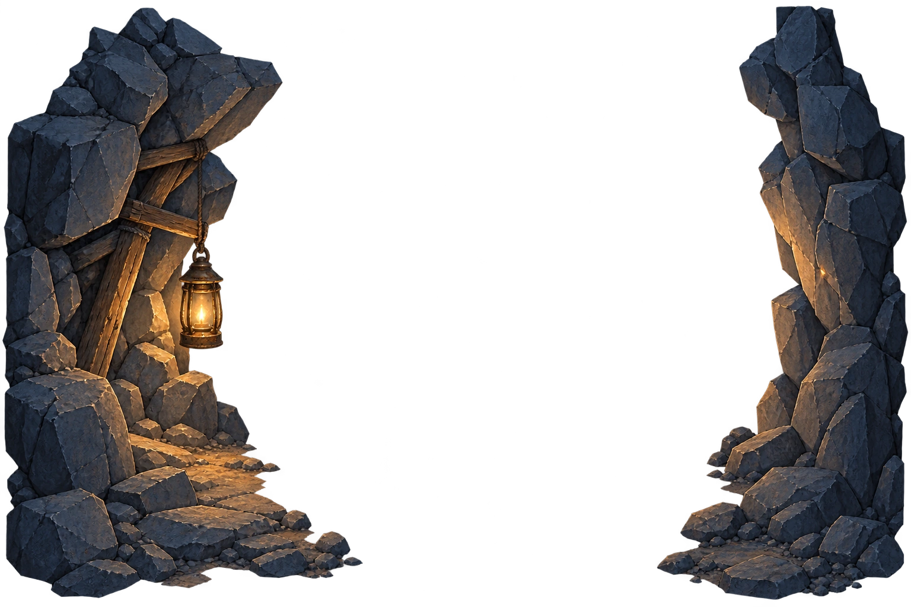
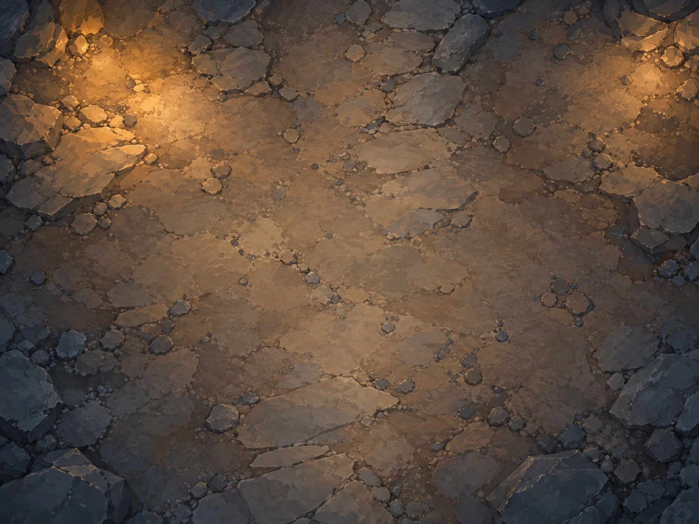
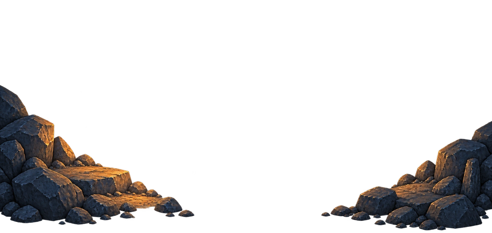
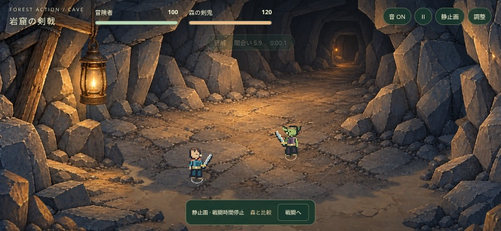

FOREST ACTION / CAVE SCENE STUDY灯りの先の岩窟。
森のモデルを焼き直さず、新規の2D画像から組み立てた洞窟です。青灰色の岩盤とランタンの暖色光、奥へ続く通路を参考画像から受け継ぎ、中央を見通しのよい戦闘空間にしました。

既存：擬似3Dの森 新版：擬似3Dの洞窟
新版：擬似3Dの洞窟同じ1280×720、俯角43°、ズーム1.23、開始位置、HP100/120、時間0。キャラクター、技、判定、カード、敵AIは共通です。静止画モードで撮影しました。
画像4枚を、4つの役割へ
| 役割 | 素材 | 使い方 |
|---|
| 遠景 | 暗い通路、連続した岩のアーチ、奥の小さな灯り | 人物より後ろで合成し、弱い視差をつける |
| 中景 | 左右の岩壁、古い支柱、ランタン | 中央に透明な空間を残す。ランタンの光を別に揺らす |
| 地面 | 岩盤、土、石畳、小石、暖かな光だまり | 平面XZへ配置。接地影は人物座標で動く |
| 前景 | 手前の岩棚、暗い側面、砕けた石 | 端を縁取る。人物に重なる場合は薄くなる |

遠景
中景
地面
前景静かな空間に、小さな動き
正射影カメラに合わせ、追従量から各レイヤーの視差を明示的に計算します。石は揺らさず、ランタンの光と地面の光だまりだけをゆっくり変化させます。浮遊粒子は10点。従来の接地影・投影影、ドット絵の剣戟、鮮明なカードUIは維持しています。

モバイル横画面相当：844×390量産の手応えと制約
今回は背景の3Dモデル制作・材質設定・影の焼き出しを使っていません。4種類の画像を生成し、共通の描画器へ配置データを渡す方法で新しい舞台を追加できました。次のシーンも、画像と配置・光・視差の定義を差し替える構成です。
作業の中心は、同じ画風の素材生成、透明な空間の確保、地面と奥の通路のつなぎ、画面内でのランタン位置の調整です。固定俯瞰の舞台を増やす方法としては有望ですが、画像を4枚揃えるだけで無調整に完成するわけではありません。大きくカメラを回す場面、地形を登る場面、背景の破壊には向きません。
岩の凹凸・壁は見た目の装飾です。戦闘範囲と地面の高さは従来どおりで、背景による新しい衝突や戦術ボーナスはありません。静止した明暗は画像に含まれ、環境設定は追加の光のゆらぎと粒子を切り替えます。
PC・モバイル相当のブラウザ確認とiPhone Safari実機確認は別です。実機の速度・発熱・使用感は未検証です。